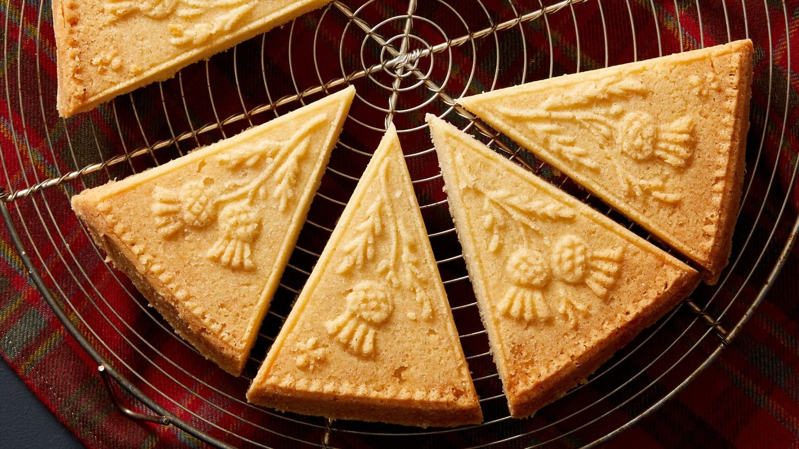

| Название блюда | Моя оценка | Ссылка на рецепт | Фото блюда |
|---|---|---|---|
| Английский завтрак | 7/10 |

|
здесь лежит рецепт |
| Пирог со свининой Melton Mowbray | 5/10 | здесь лежит рецепт | |
| Йоркширский пудинг | 7/10 | здесь лежит рецепт | |
| Шотландсское печенье Shortbread | 100/10 |  | здесь лежит рецепт |
| Корниш пасти | 8/10 |

|
здесь лежит рецепт |